Career and experiences
In good company: 25 years of employers, clients, businesses owned and projects.
Clients and employers
-
The Church of Eleven22
Ordained Pastor and Pastor of Ministry Partnerships 2025 to present
Ordained in June 2025 at The Church of Eleven22 in Northeast Florida.
-
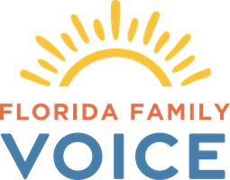
Florida Family Voice
Chief Executive Officer 2025 to present
For more than 20 years Florida’s premier defender of Life, Marriage, Family and Religious Liberty. Erik leads its vision, strategy, staffing and fundraising.
-
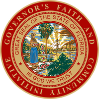
State of Florida, Executive Office of the Governor
Florida’s first Governor’s Liaison for Faith and Community 2019 to 2025
When Governor DeSantis wanted to make faith a priority in the state, he asked Erik to join his leadership team. Erik served nearly six years as the first Governor’s Liaison for Faith and Community, including leading through Covid, and created and launched the Governor’s Faith and Community Initiative office. Under his leadership more than 2,200 faith institutions and 5,600 nonprofit partners were mobilized to serve the most vulnerable, with CarePortal rolled out across a whole state for the first time. He served as Executive Director of Hope Florida in 2025.
-
For Others
Founding board member, then interim CEO and President 2018 to 2024
A nation-leading nonprofit started by Christian musician Chris Tomlin to address the foster care crisis in the United States. Erik spent five years there, first as a founding board member and then as interim CEO and President.
-
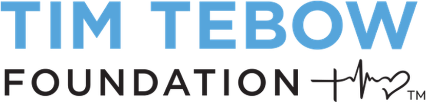
Tim Tebow Foundation
Founding President and Executive Director 2011 to 2017
Worked closely with Tim Tebow for nearly seven years on speaking engagements, marketing, business building, movie production and more. Launched numerous domestic and international ministry programs, including the Tebow CURE Hospital in the Philippines and Night to Shine. He also created, managed and built four private for-profit companies for Tim Tebow and his related entities.
-
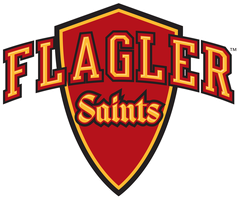
Flagler College
Adjunct Professor, Sales in Sports Management 2008 to 2011
Taught SPM 350 while running the Gator Bowl’s sales and marketing.
-
University of Florida
Graduate and Florida Blue Key member
Where it started: his professional career began in college athletics with the University of Florida Athletic Association.
-
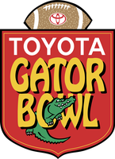
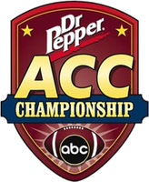
Gator Bowl Association
Intern to Vice President and Chief Marketing Officer 2000 to 2011
His first big break came in 2004, being selected as the founding Director of the ACC Championship when the ACC expanded to 12 teams; he built and ran the first three, as chief liaison to the ACC, Dr Pepper, ABC Sports and 90 game sponsors. He finished his time with the Gator Bowl Association as Chief Marketing Officer and Vice President.
Businesses owned
-
Hat n Hoodie Consulting
Founder 2017 to present
Founded as Mercy Seeds Consulting. National consulting for individuals, for-profits, nonprofits, ministries and families. The Consulting page has the rest.
-
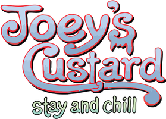
Joey’s Custard
Independent owner, Sanibel Island 2021 to 2022
Open until Hurricane Ian closed it in September 2022.
-
Auntie Anne’s
Owner and franchisee 2017 to 2024
A storefront in St. Augustine, shared with Planet Smoothie, and an Auntie Anne’s food truck across Northeast Florida that he sold in 2021.
-
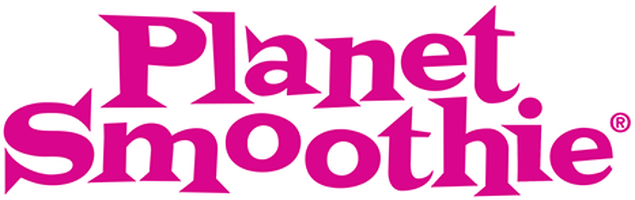
Planet Smoothie
Owner and franchisee 2017 to 2024
The other half of the St. Augustine storefront.
-
TD Autographs
-
TD Speaking
Projects
-
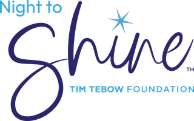
Night to Shine
Started and built it at the Tim Tebow Foundation
A prom night experience for individuals with special needs, now a worldwide movement held in all 50 states and 24 countries, representing over 32 denominations of the Christian church.
-
Run the Race
Executive producer 2016 to 2019
A theatrical feature, released in 2019.
-
He Calls Me Daughter
Executive producer 2024 to 2026
His second theatrical feature.
-
Haiti United
Collaboration
Boards, recognition and the rest
-
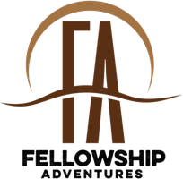
Fellowship Adventures
Chairman of the Board since 2020, executive board since 2019
Hunting and fishing trips for ministry leaders to find rest and community.
-
For Others
Founding board member 2018 to 2024
-
Florida’s Statewide Faith and Community Advisory Council
Member since 2019, Chairman from 2022 to 2025
-
Florida’s Foundation for Correctional Excellence
Board member 2019 to 2024
-
Eagle Scout
-
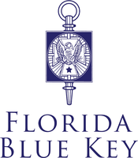
Florida Blue Key
Member, University of Florida
Every one of these has a story
Invite Erik to speak